Big Orange Crayonmusical thingsJerk Magnet, Breaking Pangea, Jupiter Sunrise and Count the Stars Valentine's, Albany December 29th, 2001 Wow, this was Mark's last show around here before he goes on tour and ends up in California... I've been going to his shows since in the wee early Me and Jeremy days and now he's a friend and all and I'm happy for him and going to miss him, too... I'm not going to write a very in-depth review for this show since it was a few days ago and I'm sitting up in Zak's house trying to sneak some writing in while he's eating dinner. Anyway, I had fun at this show, even if the large number of fourteen year old girls throwing around Count the Stars thongs was unnerving. Jerk Magnet played first. I get excited about punk bands as much as I get excited about cold oatmeal these days, but that said they did a pretty good show. High energy, volume, speed, .etc. Breaking Pangea was also good. They're more along the compex hardcore vein and they pretty much kick ass at it. Mark (Jupiter Sunrise) played third and his show showed off the reasons I'm going to miss him as a musician and as a person. It was just him for most of the set (with Ben from the Orange joining him for a few songs) and he singlehandedly rocked our collective socks off. Ariel and I held up Dadaist signs in an attempt to confuse and frighten him into lauging on stage with some success. Fun fun fun. Count the Stars are were the headliners that made all the ladies swoon. Ariel and I got out of the way so as not to be crushed by the throngs of obsessive, early-teen CTS fans, and thus I have no pictures of them. Speaking of which: Pictures: When you push Tri-X to ISO 3200, there is a huge increase in contrast which was accompanied by high contrast lighting at the show (two spotlights at the faces of the acts and a few scattered colored backlights), so these are super mega ultra contrasty. I kind of like it. Also, the negative got a long scratch along the top, and that's the cause of the white lines on the top. If I made actual prints, they wouldn't show up, but the film scanner is like, "hey! a barely noticable flaw! LOOOOK!" Oh well... Jerk Magnet: Anyway: 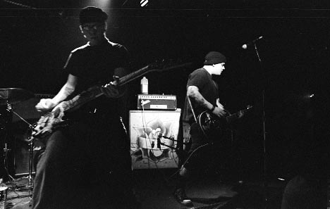 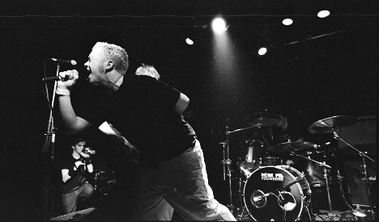 Breaking Pangea: 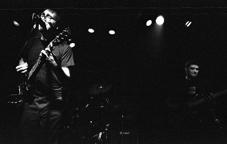 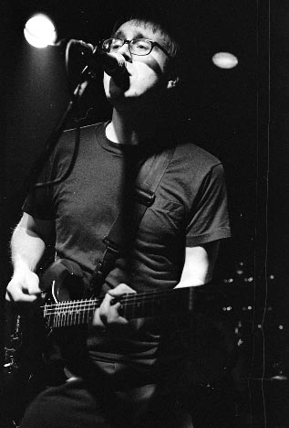 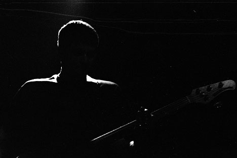 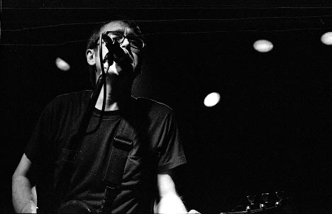 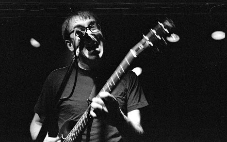 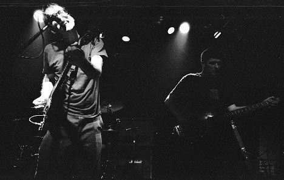 Jupiter Sunrise: 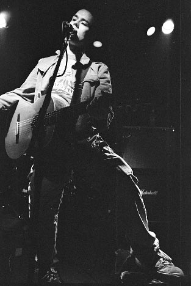 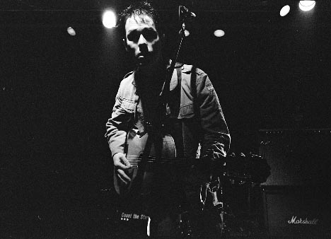 AAAAAAAA! No, this doesn't look like Mark. 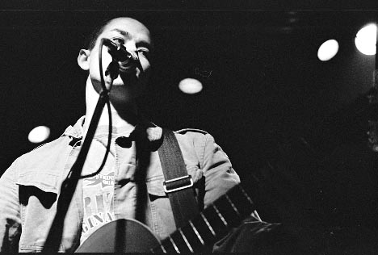 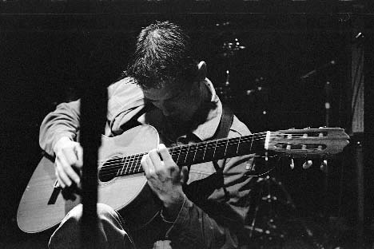 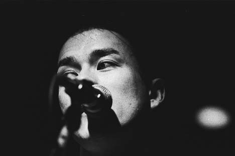 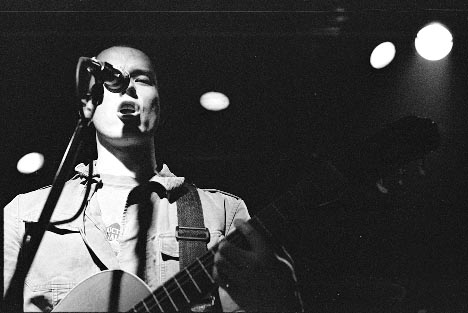 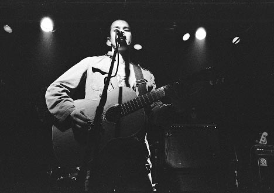 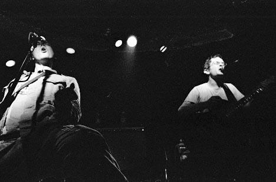 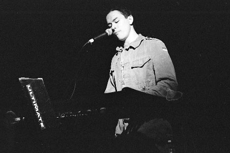 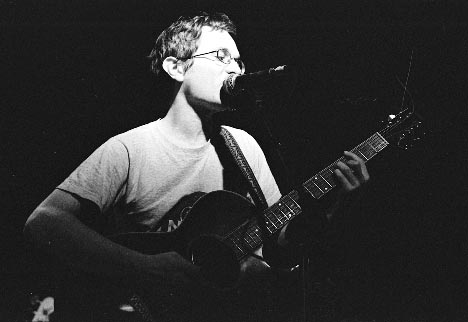 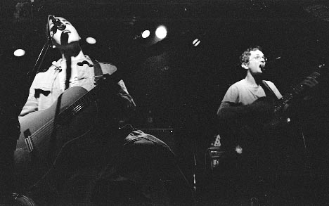 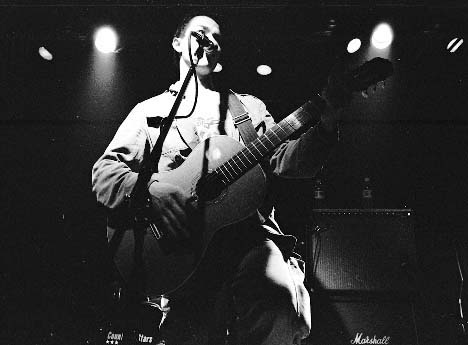 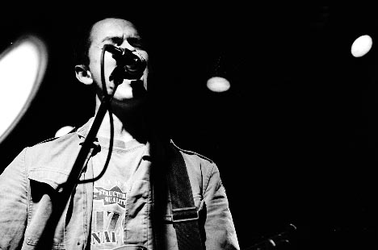 That white blob is where the developer missed a spot. I guess I could have just blacked it out and no one would have noticed, but I like the little guy. 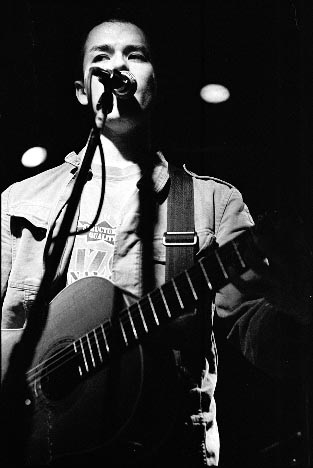 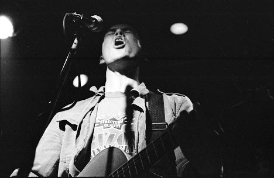 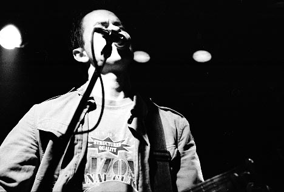 Camera stuff: Body: Nikon F3HP Lenses: 24mm f2.8, 50mm f1.8, and 105mm f2.5 Nikkors Film: Kodak Tri-X pushed to 3200 in Rodinal 1:110 Please don't use these elsewhere unless you are in one of the bands or are a nice person. |